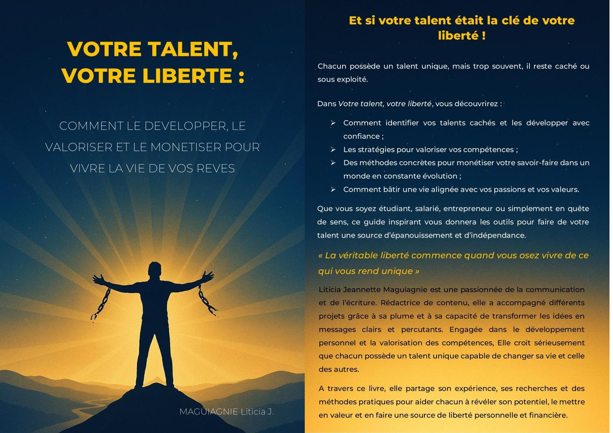
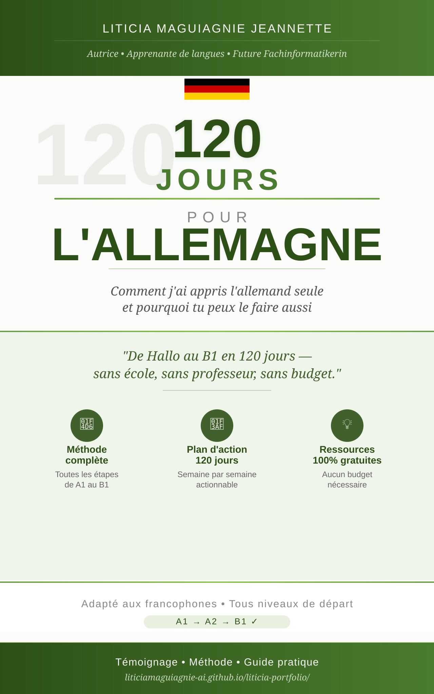
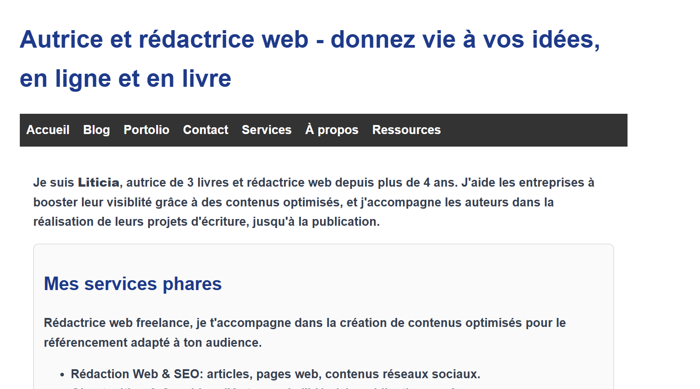

Bienvenue sur mon portfolio ! Ici, vous trouverez une présentation de mes projets et de mes compétences.


"Ce livre n'a pas pour but de remplacer ton médecin traitant. Il est là pour te donner les clés, te tendre la main dans tes moments de doute, te rappeler que tu n'es pas seule, et que chaque symptôme, chaque malaise, chaque émotion a un sens… et une solution. Chaque femme vit sa grossesse différemment. Mais ce qui nous unit toutes, c'est cette force silencieuse qui émerge en nous dès qu'une nouvelle vie s'éveille. C'est cette voix qui dit : « je vais y arriver, pour lui, pour moi. » Tu n'as pas besoin d'être parfaite. Si ce livre t'a éclairé, soulagé ou rassuré, alors il a rempli sa mission. Mais ne t'arrête pas là. Offre-le à une autre femme. Partage ce savoir. Parce que chaque femme enceinte mérite d' être informée, accompagnée et valorisée dans ce qu'elle vit. Ce n'est pas juste un guide, mais un compagnon de route. Et maintenant qu'il t'a parlé, il est temps qu'il parle à d'autres."

"Liticia a été d'une aide précieuse pour la rédaction de mon livre. Son professionnalisme et sa capacité à comprendre ma vision ont permis de donner vie à mon projet." - Coach maternité
"Ca fait aujourd'hui 3 ans que je travaille avec Liticia et son expertise en rédaction web est indéniable" - Cédrick
"En lisant son livre, j'ai pu comprendre comment développer mon talent et vivre une vie plus libre." - Gab
Vous voulez des contenus percutants, un livre publié ou un site vitrine professionnel ?